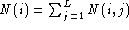
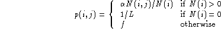
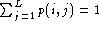
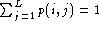
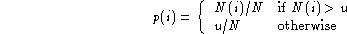
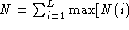
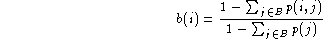

When using the bigram generating options, each transcription is assumed to have a unique entry and exit label which by default are !ENTER and !EXIT. If these labels are not present they are inserted. In addition, any label occurring in a transcription which is not listed in the HMM list is mapped to a unique label called !NULL.
HLSTATS processes all input transcriptions and maps all labels to a set of unique integers in the range 1 to L, where L is the number of distinct labels. For each adjacent pair of labels i and j, it counts the total number of occurrences N(i,j). Let the total number of occurrences of label i be  .
For matrix bigrams, the bigram probability p(i,j) is given by

where f is a floor probability set by the -f option
and  is chosen to ensure that  .
is chosen to ensure that  .
For back-off bigrams, the unigram probablities p(i) are given by

where u is unigram floor count set by the -u option and  ,u].
The backed-off bigram probabilities are given by

where D is a discount and t is a bigram count threshold set by the -t option. The discount D is fixed at 0.5 but can be changed via the configuration variable DISCOUNT. The back-off weight b(i) is calculated to ensure that , i.e.

where B is the set of all words for which p(i,j) has a bigram.
The formats of matrix and ARPA/MIT-LL format bigram files are described in Chapter 11.